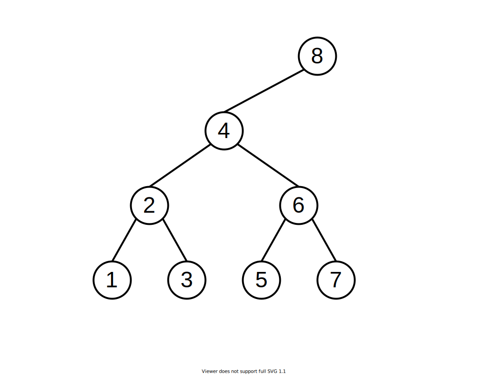
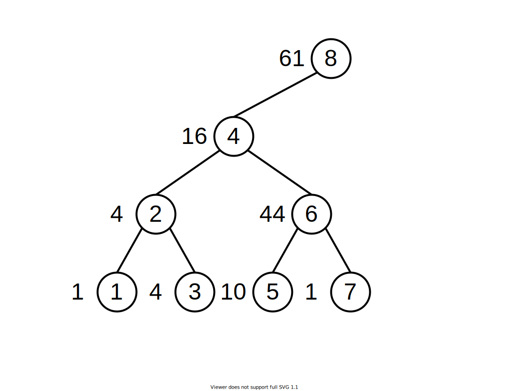
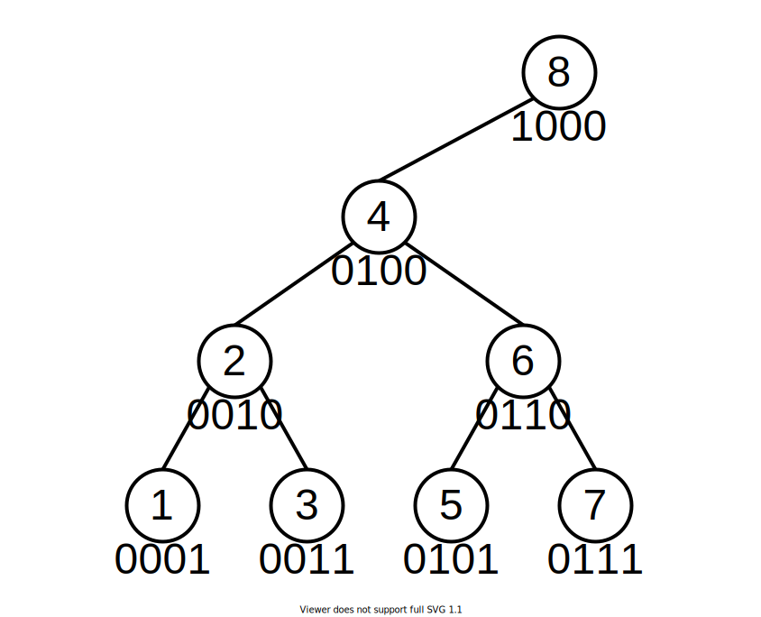

First, let’s look at one problem on the LeetCode:
Given an integer array nums, find the sum of the elements between indices i and j (i ≤ j), inclusive. The update(i, val) function modifies nums by updating the element at index i to val.
Example:
1 | Given nums = [1, 3, 5] |
Fro this question, a simple and naive solution is to maintain a prefix sum array for this input array and then we can easily get the sum of any sub array. However, the array itself will be updated at some entries, and the prefix sum array will also be updated, which could be expensive. Is there any better solution for this problem?
Say we have an array below:
array = [1,3,4,7,10,34,1,8]For convenience, we will index the array staring with 1. In other words,
array[1] = 1
array[2] = 3
...Warm-up
We construct a binary tree with all of these indices:
We assign each node a number with the index of the node.
For node i, the value of this node is the sum of all array entries will all indices in its left sub-tree and itself.
In other words, say node(i) is the value of the node with index i:
node(1) = array[1]
node(2) = array[1] + array[2]
node(3) = array[3]
node(4) = array[1] + array[2] + array[3] + array[4]
node(5) = array[5]
node(6) = array[5] + array[6]
node(7) = array[7]
node(8) = array[1] + array[2] + array[3] + array[4] + array[5] + array[6] + array[7] + array[8]We can write it in another way:
node(1) = array[1]
node(2) = node(1) + array[2]
node(3) = array[3]
node(4) = node(2) + node(3) + array[4]
node(5) = array[5]
node(6) = node(5) + array[6]
node(7) = array[7]
node(8) = node(4) + node(6) + node(7) + array[8]Put the values in the tree:
You might get confused. What can we do with this tree? Well, think about two questions.
How can we find prefix sum of the array?
Say we want to get the sum of all entries before index i (inclusive). You will find we can always find a node-to-top path in the tree whose sum of all values on that path if the prefix sum.
For example, say now i is 6，we start the node 6, get the value of node 6; as node 6’s value is the sum of array[5] and array[6], we only need to get the sum of array[1], array[2], array[3] and array[4], which is the value of node 4. Thus, the path is 6 -> 4.
We will later generalize a way to get the path for calculating the prefix sum.
If we update one entry of the array, how can we update the nodes’ values in the tree?
Apparently, all nodes whose values contain the modified entry will have to be updated. For example, say array[3] is changed, node 3, 4 and 8 will be to be updated. We also have a path to update these nodes one by one: 3 -> 4 -> 8. We will later generalize this problem as well.
Now, I believe you are still confused with this tree. A question you might ask is: How can we construct a tree like this? What are the properties of this tree?
Construction
Here we will discuss some properties of this tree:
Let’s convert all the node numbers into binary.
Parent and Child Nodes
- If this node is its parent node’s left child node, then its parent node is: increment the last set bit of this node number. For example, if we increment the last set bit of 2 (0010), we get 4, which is the parent node of node 2.
- If this node is its parent node’s right child node, then its parent node is: remove the last set bit of this node number. For example, if we remove the last set bit of 7 (0111), we get 6, which is the parent node of node 6.
Though these observations will help us understand the tree better, we do not need these information, as you will see later.
Tree Shape
With the previous property, it is not easy to get that, for a node i, its parent node and child nodes will always be fixed, and it is independent of the array’s length. More interestingly, a non-root node in the tree might not have a parent node.
The picture above shows the tree of an array of length 8. The picture below shows trees for arrays with length 10 and 15.

You can see that, every time we are given an array, the tree is already there. A longer array just means we should add more nodes to the tree.
We can find more properties of the tree based on the binary representation.
Application
In the warm-up section we have discussed how can we get the prefix sum of the array and how can we update the tree if we update the array. Here, we will generalize the answer to these two problems.
Prefix Sum
what is the prefix sum of the array at index i (inclusive) (note: we still use 1-based indexing here)? Similarly, we still wish to find a path (starting at i) that the sum of all values on that path is the prefix sum. It is not hard to find out that the node number on that path will be decreasing, as we need to sum all nodes’ values with lower indices. Thus, for a node i, in order to find the nodes with lower indices, there are three parts we need to consider:
- Its left sub tree. Apparently, we can ignore this part, as node
ialready contains all values in its left tree. - Node at the same or lower level (see picture below) which are smaller than
i(e.g., node 1, 2 and 3 for node 6). We can also ignore this part because all such nodes will be included by a node on a higher level, which will be discussed in the case 3 (e.g., node 1, 2 and 3 are included by node 4). - Nodes with higher level which are smaller than
i. For example, ifiis 5, the next node on the path should be 4.

A straightforward way to find the prefix sum path is: starting at node i, go to its parent node, if its node is smaller than i, then add it to the path; continue it until we reach the root.
In fact, we have a better way to find the next node: remove the last set bit of i, the new number is just the next node which is smaller than i and on a higher level. It can be expressed as i - i & (-i), where i & (-i) is the last set bit and all zeros after this bit. For example, if i is 7, the path is 0111(7) -> 0110(6) -> 0100(4) -> 0000(0) (end of the path); if i is 9, the path is 1001(9) -> 1000(8) -> 0000(0).
This observation is really helpful for coding. You will feel it magic, but we can always find an explanation. In fact, the last set bit of one node always indicates the level of this node, for example, if last set bit of 10 and 14 is 10, which means they are on the second level; 1 indicates the first level and 100 indicates the third level. Thus, for a given node i, if we want find the next smaller node which is on a higher level, then apparently, we just need to remove the last set bit of i.
A snippet of code to get the prefix sum:
1 | int prefixSum = 0; |
Update the Tree
If the array is updated, we then need to update the tree as well. Apparently, we need to find all nodes that are affected by the modified entry of the array. Instead of finding a descending path in the last problem, here we need to find an ascending path.
How can we find larger nodes of node i? Similarly, we can also have three cases like we did for the last problem, but we only need to consider one part: all nodes at higher levels which are larger than i.
Thus, similarly, we can also find the path by starting with i and recursively finding parent nodes. However, a more concise way is to just increment the last set bit of i, which can be expressed as i + i & (-i). It also has a good explanation: we need to find the next larger number whose last set bit is also higher, thus incrementing the last set bit is just the solution.
It is then trivial to update the tree.
1 | // diff is the diff between the old value and new value on index i |
Summary
It is kind of hard to fully understand this magic data structure, but coding with all of these ideas is pretty easy. Here is a solution to the original LeetCode problem.
1 | class NumArray { |
The time complexity of the two methods are both O(logN) where N is the length of the input array.